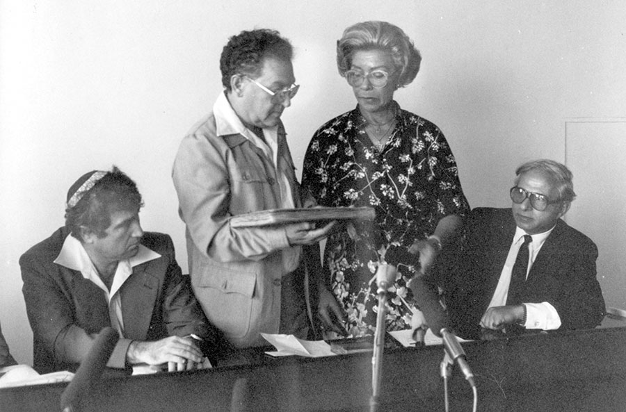

Musée Carnavalet
Un viaggio nella storia di Parigi attraverso collezioni, dipinti e reperti che raccontano la vita della città dal XVI secolo alla Belle Époque.
Approfondisci →

Un itinerario nel cuore storico di Parigi tra memoria, arte e identità ebraica.
Un viaggio nella storia di Parigi attraverso collezioni, dipinti e reperti che raccontano la vita della città dal XVI secolo alla Belle Époque.
Approfondisci →
Centro di documentazione e memoria sull’Olocausto, dedicato alla comunità ebraica francese e alle vittime della deportazione.
Approfondisci →
Una testimonianza fotografica unica dei deportati di Auschwitz, ritrovata da Lili Jacob nel 1945, oggi esposta al Mémorial.
Approfondisci →Partenza dal B&B Hotel Paris Porte de la Villette
Ingresso gratuito | 23 Rue de Sévigné – 3e Arr.
17 Rue Geoffroy-l’Asnier – 4e Arr. (ingresso gratuito)
tema: la deportazione in Francia
Docenti referenti: Angelini Cristina, Bassi Silvia
Siti ufficiali:
Musée Carnavalet
Mémorial de la Shoah